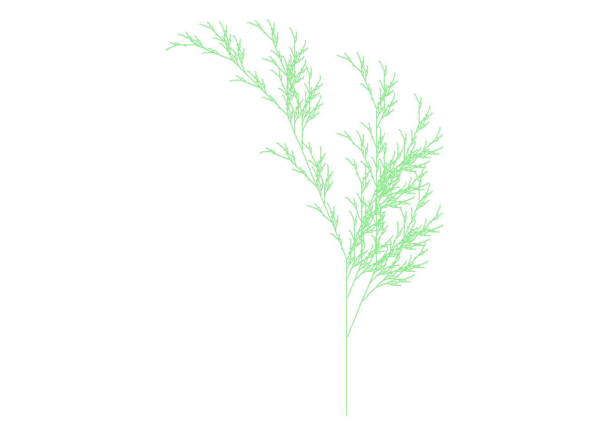

Code
library("vembedr")
embed_url("https://youtu.be/eUSx4_S6O34")%>%
use_align("center")The Generative Art Guide describes generative art as creating art (shape, forms, colors, etc.) from an computer using a set of rules.
The page introduces us a various artists who create generative art and algorithm art.
Figure 1 is a piece by Mark J. Stock, who tread the line between what’s natural and what’s computerized.

AI generated art is a specific type of generative art to uses machine learning tools to examine existing work. The following source will discuss those a little more.
The Tate art museum adds that generative art usually includes an element of chance. According to the museum, Harold Cohen was considered one of the pioneers for generative art, which started from the dada movement.

There is no surprise that this new way of creating will leave “traditional” artists somewhat uneasy. In this New York Times article, published a few days ago, an A.I. generated piece Figure 3 by artist Jason Allen won this year’s the Colorado State Fair’s annual art competition.

Allen explained that he didn’t break the rules to the win the Colorado State Fair’s annual art competition.
Here is a glimpse of how powerful A.I.-generating tools like Midjourney or Dall-E 2 can be.
KarenXCheng is an video creator uses Dall-E 2 to create different images for her projects. We can see that in Figure 4, the tool needs specific prompts to generate different images. The artists, like Cheng, will have to comb though them to select the ones she likes best!
library("vembedr")
embed_url("https://youtu.be/eUSx4_S6O34")%>%
use_align("center")In Figure 5, Cheng also uses multiple AI tools like Dall-E 2 to generate images, and EbSynth to optimize her project.
library("vembedr")
embed_url("https://youtu.be/6-L4vHmt1Dc")%>%
use_align("center")Figure 6 is a modified version of “Fall Color,” using the color “lightgreen” instead of “burlywood3.”
Credit: https://fronkonstin.com
# Install packages
# install.packages("gsubfn")
# install.packages("tidyverse")
library(gsubfn)
library(tidyverse)
# Define elements in plant art
# Each image corresponds to a different axiom, rules, angle and depth
# Leaf of Fall
axiom="X"
rules=list("X"="F-[[X]+X]+F[+FX]-X", "F"="FF")
angle=22.5
depth=6
for (i in 1:depth) axiom=gsubfn(".", rules, axiom)
actions=str_extract_all(axiom, "\\d*\\+|\\d*\\-|F|L|R|\\[|\\]|\\|") %>% unlist
status=data.frame(x=numeric(0), y=numeric(0), alfa=numeric(0))
points=data.frame(x1 = 0, y1 = 0, x2 = NA, y2 = NA, alfa=90, depth=1)
# Generating data
# Note: may take a minute or two
for (action in actions)
{
if (action=="F")
{
x=points[1, "x1"]+cos(points[1, "alfa"]*(pi/180))
y=points[1, "y1"]+sin(points[1, "alfa"]*(pi/180))
points[1,"x2"]=x
points[1,"y2"]=y
data.frame(x1 = x, y1 = y, x2 = NA, y2 = NA,
alfa=points[1, "alfa"],
depth=points[1,"depth"]) %>% rbind(points)->points
}
if (action %in% c("+", "-")){
alfa=points[1, "alfa"]
points[1, "alfa"]=eval(parse(text=paste0("alfa",action, angle)))
}
if(action=="["){
data.frame(x=points[1, "x1"], y=points[1, "y1"], alfa=points[1, "alfa"]) %>%
rbind(status) -> status
points[1, "depth"]=points[1, "depth"]+1
}
if(action=="]"){
depth=points[1, "depth"]
points[-1,]->points
data.frame(x1=status[1, "x"], y1=status[1, "y"], x2=NA, y2=NA,
alfa=status[1, "alfa"],
depth=depth-1) %>%
rbind(points) -> points
status[-1,]->status
}
}
ggplot() +
geom_segment(aes(x = x1, y = y1, xend = x2, yend = y2),
lineend = "round",
color="lightgreen", # Set your own Fall color?
data=na.omit(points)) +
coord_fixed(ratio = 1) +
theme_void() # No grid nor axes
The Economic Consequences of Increasing Sleep Among the Urban Poor is an article that discussed an experimental research about sleep and its impact. Figure 7 sums up the findings of the study.

When I looked at Figure 7, I was immediately drawn to the larger colored area at the bottom of the graphic, separating the effects of a night-sleep treatment and nap treatment. Whatever is being tested, naps has a larger effect than night-sleep.
The next elements I saw were the tests grouped by colors since my eyes were focus on the lower part of the graphics.
To find out what the colors mean, I look at that top of the graphic. At this point, I was able to compare the magnitude of the effects between night-sleep and naps. The graphic did a good job guiding my attention.
The bar in the middle of the rectangles are standard deviations. This a clean and effective way to provide more information about the results.
Next, I was curious about whether these effects were positive or negative. Here is where I don’t think the author did the best job. It was easier to see where the baseline (zero effect) was in the nap section thanks to the large rectangles for positive effects. However, it is harder to see whether the effects are positive or negative for night-sleep, especially when they are small like cognition effects. An easy way to rectify this is to add a grey or faint line at 0.